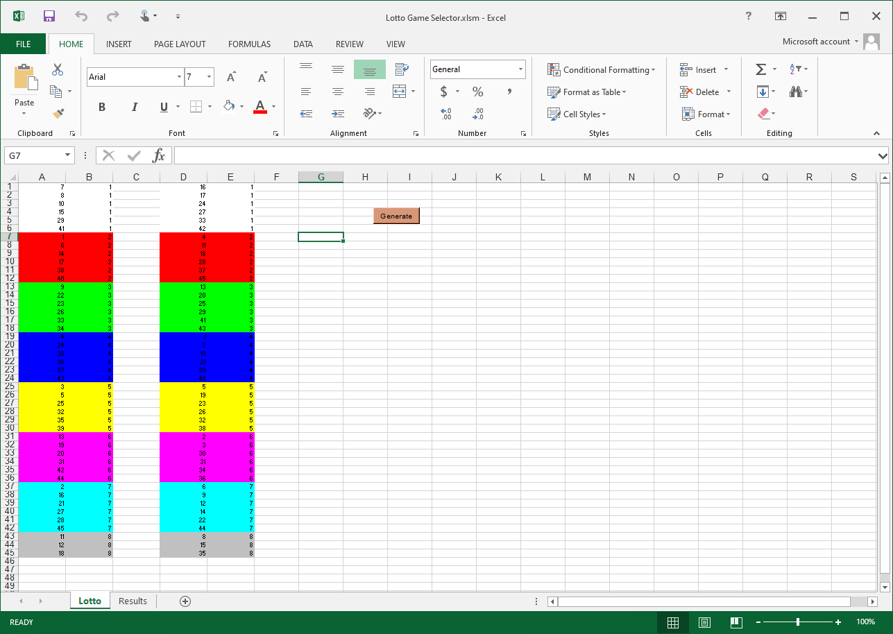
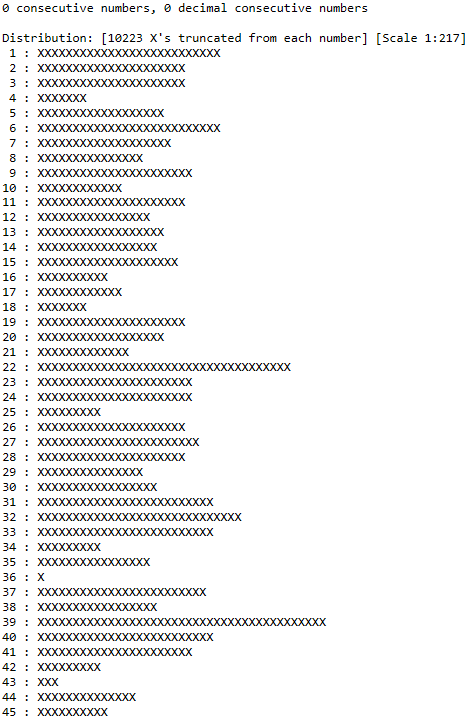
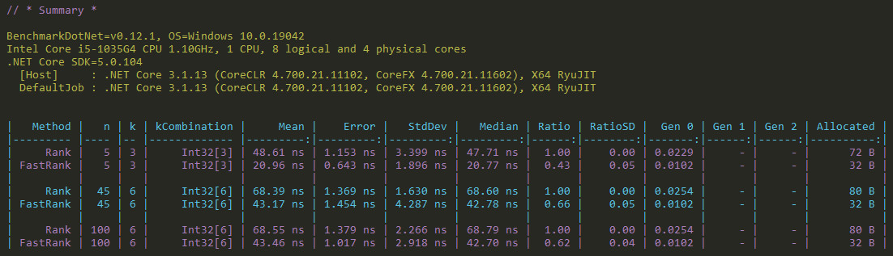

Software Algorithms for k-combinations
Interpreting the mathematics of k-combinations for computer programmers.
Crystal Pyramid Wallpaper by Michael DziedzicSkip Preface and Jump to the Post
Introduction
Computer programmers, software engineers, software developers; no matter what we call ourselves, there are times where all of us find ourselves faced with some logic we know is a solved problem and reach out on the internet for the solution. Most of the time that solution can be found by spending a few minutes on our favourite search engine. We quickly gain knowledge of how the solution works, most often with code to help us understand the explanation. We take the code offered, tinker with it to make it our own, and move on having learned something.
This was not the case for me recently when it came time to work with algorithms I needed for what mathematicians call k-combinations. While I quickly found information about the mathematics of k-combinations, I found precious little about converting that mathematics in to code.
Having spent weeks of spare time working on a problem that I expected would only take a few minutes, and with encouragement from fellow engineers, I realised there was a hole in our online knowledge base about this important topic. This post attempts to fill that void.
How it Started
25 years ago I wrote an application in Microsoft Excel to help me pick numbers for the national lottery. In the mid 90’s when I wrote this app, the biggest (and only) lottery available in my hometown city of Perth (Western Australia) was the Saturday Lottery Draw. In this lottery, every game required you to pick 6 numbers from 45 numbers, and you could play as many games as you like every week for an increasing amount of cost.
Like any gambler worth their salt, I have my own superstitions when it comes to the selection of my numbers. Here are mine:
- Make sure you play every number in the field at least once, across a minimal number of games
- If you don’t win any prize in the weekly draw, replay the same numbers the following week
- If you do win any prize in the weekly draw, regenerate a new set of numbers to play
You don’t have to be a math genius to realise that to satisfy #1 you need to play a minimum of 45 ÷ 6 = 7.5 games. I chose to play 12 games every week, so I could cover the field once, take the three numbers left over from game 8 with the left over from game 8 in a second field, and fill 4 more games with randomly selected games from that second field.
This was fairly simple to achieve with Excel VBA. I wrote two columns of numbers from 1 to 45 (the two fields), shuffled the columns using VBA’s random number generator, then coloured each group of 6 (each game) with different colours. I manually transfer my picks onto paper coupons and play them each week.

25 years later I’m still waiting for that big win. The gambler’s conspiracy voice in my head has been at me for decades to change my approach. Being a vastly more seasoned programmer today than I was when I wrote that app, one day I decided to indulge my inner gambler and rewrite the app using my current technology stack (C# with a UWP front end). You know, purely for scientific purposes 🤨. It wouldn’t take long, right? 🤦♀️
New Superstitions
Software engineers are very good at identifying patterns, and I am quite exceptional at it. After decades of using my Excel App I’ve noticed what appears to be the same groups of numbers appearing over and over. The scientist in me theorises the 25+ year old VBA randomizer probably doesn’t have the best random distribution on the planet, so I wondered if the .NET randomizer would be any better.
It wasn’t hard to whip up some code in LinqPad to show the distribution, and sure enough it was terrible. I toyed with the .NET Cryptogrphic Number Generator and was equally dissatisfied. I searched NuGet for a better alternative, and settled on RandN which has a specific aim to improve the quality of the randomness. Testing the distribution of the various generators RandN provides also left me dissatisfied. Here’s a sample distribution over 100 million generations of numbers between 1 and 45 using it’s StandardRng strategy:

After some experimentation with generating lotto games randomly, and noticing certain combinations repeating too often for my liking, I resigned myself to the fact that simply using a random number generator was not going to be enough to satisfy my inner conspiracist. I would need to do more work to guarantee I don’t play the same numbers more than once.
It should be obvious there will be a finite number of ways to choose 6 numbers from 45 numbers. I figured if I precalculate every possible combination of 6, select my games randomly from this list, and store the combinations I have played, then I can guarantee I won’t be repeating games until I have depleted the entire list. I need to do additional work to ensure I don’t choose combinations that violate superstition #1 above, but that’s the kind of algorithmic challenge that I love about writing code; I have faith in myself to resolve that.
I just need to generate that list right?
Another Numbers Game
To track the games I’ve played I would be storing a large list of sequences of 6 numbers on disk, so I need to consider how much space that takes. The worst case with minimal decoration will store all combinations of 45 choose 6, so how many combinations are there?
Mathematics has a field of study called Combinatorics that is devoted to counting systems of finite and infinite sets of numbers. It doesn’t take much searching to discover that in the language of mathematics I’m asking the question “how many combinations are there of n choose k?”. This is a solved problem in mathematics; the number of k-combinations is the count of the finite set of unique ways to choose k combinations from n things. From there it’s easy to find the formula for the Binomial Coefficient which is used to calculate the count of n choose k.
$$
\bigg(
\vcenter{n \atop k}
\bigg)
$$
How to write n choose k in mathematics
I won’t go into the math just yet, but using this formula I found the number of combinations I would need to store is 8,145,060. That’s a big number! If I store all 6 numbers of each combination as a 12 digit string with no separator, this results in a file size of over 85MB! That’s an excessive amount of data for someone who grew up in the 8 bit era, and I simply couldn’t find peace until I found a better storage mechanism.
Can You Smell What The Math Is Cooking?
One tool computer scientists use to identify entries in a consistently repeatable sequence of data (such as my list of all possible sequences) is an index. I can just number each entry in my list of all possible games with an integer from 1 to 8,145,060 as long as I can generate the same sequence every time I need. If I store each index on it’s own line in the file, that gives me a maximum file size of just under 69MB. While that is an improvement over 85MB (almost 20% less data), there are more efficient ways to store index data than as ASCII. What’s important to realise though is that indexing is probably my best way to reference previously played combinations.
When it comes to Combinatorial Number Systems, mathematics has us covered there too. In combinatorics, the index of an entry in the finite set of $(n \space choose \space k)$ is called the rank, and finding the index/rank of a k-combination from the set $(n \space choose \space k)$ is called ranking.
Now mathematicians love a good bijection as much as any computer scientist (maybe even more…purist bastards! 😁), so with typical swagger mathematics defines the inverse operation as well. In combinatorics finding the k-combination at a specific index/rank from the set $(n \space choose \space k)$ is called unranking. At least the naming convention makes implicit sense!
Both ranking and unranking operations will be required in my new lotto game generating app. I’ll need to generate the set of all combinations of $(45 \space choose \space 6)$ using a for loop over all the possible indexes 1 to 8,145,060 (unranking) , and I’ll need to regenerate the index from the combination when I’m caching the played games to disk (ranking).
Where’s Wally?
Knowing what the mathematical terms are is one thing, but finding examples of algorithms implementing them is something else. For programmers, the most helpful Stack Overflow contributions on the topic often refer to an old MSDN article that has been retired, and currently available only by downloading a massive PDF archive of MSDN that includes it. For mathematicians, community contributions gloss over much of the reasoning that programmers need to create algorithms. I suppose in that respect at least the programming and mathematical communities have that in common. 😜
After a lot of searching I concluded that finding algorithms for rank and unrank weren’t available to read, understand, and use like most solved problems generally are. In terms of a complete reference of how to think about those mathematical functions, the best example I could find was definitely that retired MSDN article by Dr James McCaffrey, which I’ve dug out and am now hosting for posterity and your reading pleasure.
Armed with Dr McCaffrey’s article in particular, and supported by a host of other mathematical and Wikipedia web pages, I began to decode, reproduce, and create the functions I needed in C#.
Algorithm Archaeology
The article describes the algorithm for unranking a k-combination from it’s index, as well as providing some C# code to do it. While the code is welcome and helps to verify the intention of the lengthy description, the description itself is the gold I needed to find in order to resurrect the knowledge. As for the code, I most often I prefer to re-write code myself to embed the knowledge in my own mind and incorporate language features that didn’t exist when reference code was written (simplifying it for maintainability and unit testing). Further, the reference code uses a zero-based system whereas the solution I’m after requires a one-based system.
After a lot of sweat and experimenting, I managed to distill the algorithm for a one-based unrank function down to the pseudocode below. The steps required in the algorithm are on the left, while some example working out using the set $(\color{yellowgreen}5 \space choose \space \color{skyblue}3)$ with an index of $\color{yellowgreen}1$ is on the right. Ignore the unfamiliar terms as I’ll define what they are a little later on in this post.
1 | Take n and k | n = 5, k = 3, (n choose k) = 10 |
The pseudocode for the Unrank function
Let’s step through the algorithm.
- Take n and k
This simply defines the values of n and k, and the value of (n choose k). - Take the index we want
This defines the index/rank of the k-combination we want to retrieve from the set $(n \space choose \space k)$ - Move to base 0
Converts the system to a zero-based system. Ignore this step if you already use base zero. - Calculate the dual
Calculates the dual of the index/rank. - Calculate combinadic of the dual
Calculates the combinadic of the dual. - Map to zero-based combination
Maps the combinadic to the k-combination in a zero-based system. - Add 1 (for base 1)
Because I want one-based combinations, I add 1 to the result.
Fairly simple right? But what are those undefined terms? What do they mean?
Calculating n choose k
As mentioned previously, finding the value of $(n \space choose \space k)$ is a solved problem. In mathematics we use the Binomial Coefficient to calculate this value, and forms of the algorithm are explicitly described in the Combinations Wikipedia page.
Here’s my version, which is based on the second alternate computation method from that page:
1 | // / \ |
The Dual
The Dual (as Dr. McCaffrey calls it) is defined as the value of $(n \space choose \space k)$ minus the rank/index of a k-combination. For example, if we list out all the possible combinations of $(5 \space choose \space 3)$, the index/rank runs from $[1..10]$ and the duals run from $[10..1]$.
While my lottery generator needs to work with a one-based numbers, we’ll list the zero-based equivalent of $(5 \space choose \space 3)$ as well. This will become important for reference later in this article.
1 | (5 choose 3) |
The Combinadic
In the decimal number system we can represent a number by breaking it down into it’s unit columns. For example, the decimal number $\color{yellowgreen}{4096}$ can be broken down as follows:
$$
\color{yellowgreen}{4096} =
(\color{yellowgreen}4 * \color{skyblue}{1000})+
(\color{yellowgreen}0 * \color{skyblue}{100})+
(\color{yellowgreen}9 * \color{skyblue}{10})+
(\color{yellowgreen}6 * \color{skyblue}1)
$$
These unit columns can be represented as a powers of ten with the exponent changing by one for each column; the ones column is $\color{skyblue}{10^0}$, the tens column is $\color{skyblue}{10^1}$, the hundreds column is $\color{skyblue}{10^2}$, and so on.
$$
\color{yellowgreen}{4096} =
(\color{yellowgreen}4 * \color{skyblue}{10^3})+
(\color{yellowgreen}0 * \color{skyblue}{10^2})+
(\color{yellowgreen}9 * \color{skyblue}{10^1})+
(\color{yellowgreen}6 * \color{skyblue}{10^0})
$$
This method for representing numbers can also be used by other numerical systems. The binary number system can be represented with each unit column as a power of two. The decimal number $\color{orange}{19}$ is $\color{yellowgreen}{10011}$ in binary, which is broken down as:
$$
\color{orange}{19} =
\color{yellowgreen}{10011} =
(\color{yellowgreen}1 * \color{skyblue}{2^4}) +
(\color{yellowgreen}0 * \color{skyblue}{2^3}) +
(\color{yellowgreen}0 * \color{skyblue}{2^2}) +
(\color{yellowgreen}1 * \color{skyblue}{2^1}) +
(\color{yellowgreen}1 * \color{skyblue}{2^0})
$$
Now lets consider a combinatorial number system. In a combinatorial number system we can represent any number by breaking it down into unit columns just like the decimal and binary systems. However instead of representing each unit column as a power of some base integer, we’ll use binomial coefficients.
For a finite set $(\color{yellowgreen}n \space choose \space \color{skyblue}k)$, the left-most unit column starts with a base of $\color{skyblue}k$, the next column has base $\color{skyblue}{k-1}$, and so on until the final column with $\color{skyblue}k=\color{skyblue}1$. We can express the representation of any number $\color{orange}z$ of $(\color{yellowgreen}n \space choose \space \color{skyblue}k)$ as:
$$
\begin{eqnarray*}
&\color{orange}z=
(\color{yellowgreen}{c_1} \space choose \space \color{skyblue}k)+
(\color{yellowgreen}{c_2} \space choose \space \color{skyblue}{k-1})+ … +
(\color{yellowgreen}{c_k} \space choose \space \color{skyblue}1)\\
&\space\\
&\equiv\\
&\space\\
&\color{orange}z=
\bigg(\vcenter{\color{yellowgreen}{c_1} \atop \color{skyblue}k}\bigg)+
\bigg(\vcenter{\color{yellowgreen}{c_2} \atop \color{skyblue}{k-1}}\bigg)+ … +
\bigg(\vcenter{\color{yellowgreen}{c_k} \atop \color{skyblue}1}\bigg)\\
\end{eqnarray*}
$$
When the values of $\color{yellowgreen}{c_i}$ are chosen such that each $\color{yellowgreen}{c_i}$ is greater than the $\color{yellowgreen}{c_{i+1}}$ following it (or zero if it follows a zero), then the set of all $\color{yellowgreen}{c_i}$ is what Dr McCaffrey calls the Combinadic.
As an explicit example, let’s look at the representation of the number $\color{orange}7$ in the set of numbers $(\color{yellowgreen}5 \space choose \space \color{skyblue}3)$.
$$
\begin{eqnarray*}
&\color{orange}7=
(\color{yellowgreen}4 \space choose \space \color{skyblue}3)+
(\color{yellowgreen}3 \space choose \space \color{skyblue}2)+
(\color{yellowgreen}0 \space choose \space \color{skyblue}1)\\
&\space\\
&\equiv\\
&\space\\
&\color{orange}{7}=
\bigg(\vcenter{\color{yellowgreen}4 \atop \color{skyblue}3}\bigg)+
\bigg(\vcenter{\color{yellowgreen}3 \atop \color{skyblue}2}\bigg)+
\bigg(\vcenter{\color{yellowgreen}0 \atop \color{skyblue}1}\bigg)\\
&\space\\
&\equiv\\
&\space\\
&\color{orange}{7}=
\color{yellowgreen}{4} +
\color{yellowgreen}{3} +
\color{yellowgreen}{0}\\
&\space\\
&⟹\\
&\space\\
&combinadic(\color{orange}{7})=
(\color{yellowgreen}{4},
\color{yellowgreen}{3},
\color{yellowgreen}{0})\\
\end{eqnarray*}
$$
We’ll discuss how to calculate the combinadic of numbers a little later.
Combining the Combinadic and the Dual
It turns out the combinadic has a very useful property for working with k-combinations in zero-based combinatorial number systems $(n \space choose \space k)$: when each $c_i$ of the combinadic of any dual is subtracted from the number $n-1$, it reveals the zero-based k-combination of the rank/index of that dual.
That’s quite a mind-bender to take in, so here’s what this property looks like for the complete set of duals in the set $(5 \space choose \space 3)$:
1 | dual "choose" representation combinadic (n-1) - combinadic rank |

This means that if we have any rank/index of $(n \space choose \space k)$, we can use the combinadic of the dual of that number to give us the k-combination at that rank/index. This is only true for zero based combinatorial number systems, but it isn’t too hard to use a bit of addition and subtraction at key stages to get to a one-based system like I need for my lottery app.
How exactly does the relationship between the combinadic, dual, and $n-1$ produce the k-combinations of $(n \space choose \space k)$? Dr. McCaffrey doesn’t explain in his article, and I haven’t found any explanation in any of my searches across the web. I’m sure there is mathematics somewhere to prove this relationship, but I’ve just not found any. 🤷♀️
Calculating the Combinadic
Fortunately Dr. McCaffrey does explain how to calculate the combinadic of a number, at least for zero-based systems. Remember, the definition of the combinadic of a number $\color{orange}z$ satisfies the equation:
$$
\color{orange}z=
(\color{yellowgreen}{c_1} \space choose \space \color{skyblue}k)+
(\color{yellowgreen}{c_2} \space choose \space \color{skyblue}{k-1})+ … +
(\color{yellowgreen}{c_k} \space choose \space \color{skyblue}1)
$$
We need to calculate the values of $\color{yellowgreen}{c_i}$ such that each $\color{yellowgreen}{c_i}$ is greater than the $\color{yellowgreen}{c_{i+1}}$ following it (or zero if it follows a zero).
Let’s work through the example of $\color{orange}7$ from the set $(\color{yellowgreen}5 \space choose \space \color{skyblue}3)$.
$$
\color{orange}7=
(\color{yellowgreen}{c_1} \space choose \space \color{skyblue}3)+
(\color{yellowgreen}{c_2} \space choose \space \color{skyblue}2)+
(\color{yellowgreen}{c_3} \space choose \space \color{skyblue}1)
$$
Finding $\color{yellowgreen}{c_1}$
First we look for the largest value of $(\color{yellowgreen}{c_1} \space choose \space \color{skyblue}3)$ that doesn’t exceed $\color{orange}7$. We know the maximum number possible will be $(\color{yellowgreen}5 \space choose \space \color{skyblue}3)$, so we work our way down from $\color{yellowgreen}5$ until we find a value $\leq \color{orange}7$.
Now $(\color{yellowgreen}5 \space choose \space \color{skyblue}3) = \color{yellowgreen}{10}$, but $(\color{yellowgreen}4 \space choose \space \color{skyblue}3) = \color{yellowgreen}4$, so we’ve discovered that $\color{yellowgreen}{c_1}=\color{yellowgreen}4$.
$$
\begin{eqnarray*}
&\color{orange}7=
\color{yellowgreen}4+
(\color{yellowgreen}{c_2} \space choose \space \color{skyblue}2)+
(\color{yellowgreen}{c_3} \space choose \space \color{skyblue}1)\\
&\space\\
&\equiv\\
&\space\\
&\color{orange}3=
(\color{yellowgreen}{c_2} \space choose \space \color{skyblue}2)+
(\color{yellowgreen}{c_3} \space choose \space \color{skyblue}1)
\end{eqnarray*}
$$
Finding $\color{yellowgreen}{c_2}$
Next we look for the largest value of $(\color{yellowgreen}{c_2} \space choose \space \color{skyblue}2)$ that doesn’t exceed $\color{orange}3$. We know the maximum number possible will be $(\color{yellowgreen}5 \space choose \space \color{skyblue}2)$, so we work our way down from $\color{yellowgreen}5$ until we find a value $\leq \color{orange}3$.
Now $(\color{yellowgreen}5 \space choose \space \color{skyblue}2) = \color{yellowgreen}{10}$, $(\color{yellowgreen}4 \space choose \space \color{skyblue}3) = \color{yellowgreen}6$, but $(\color{yellowgreen}3 \space choose \space \color{skyblue}2) = \color{yellowgreen}3$, so we’ve discovered that $\color{yellowgreen}{c_2}=\color{yellowgreen}3$.
$$
\begin{eqnarray*}
&\color{orange}3=
\color{yellowgreen}3+
(\color{yellowgreen}{c_3} \space choose \space \color{skyblue}1)\\
&\space\\
&\equiv\\
&\space\\
&\color{orange}0=
(\color{yellowgreen}{c_3} \space choose \space \color{skyblue}1)
\end{eqnarray*}
$$
Finding $\color{yellowgreen}{c_3}$
There can be only one value for any remaining $\color{yellowgreen}{c_i}$ once we get to $\color{orange}0$, and that’s $\color{yellowgreen}0$. So we’ve discovered that $\color{yellowgreen}{c_3}=\color{yellowgreen}0$.
The Result
Now we have all the values of $\color{yellowgreen}{c_i}$ the combinadic is revealed:
$$
\begin{eqnarray*}
&\color{orange}7=
(\color{yellowgreen}4 \space choose \space \color{skyblue}3)+
(\color{yellowgreen}3 \space choose \space \color{skyblue}2)+
(\color{yellowgreen}0 \space choose \space \color{skyblue}1)\\
&\space\\
&\equiv\\
&\space\\
&\color{orange}{7}=
\color{yellowgreen}{4} +
\color{yellowgreen}{3} +
\color{yellowgreen}{0}\\
&\space\\
&⟹\\
&\space\\
&combinadic(\color{orange}{7})=
(\color{yellowgreen}{4},
\color{yellowgreen}{3},
\color{yellowgreen}{0})\\
\end{eqnarray*}
$$
Algorithm for Unrank
Now that we’ve discussed the theory and defined the terms, lets return to the pseudocode of the unrank function:
1 | Take n and k | n = 5, k = 3, (n choose k) = 10 |
Things should make complete sense now. The only thing to note is how I convert my index from one-based to zero-based so I can use Dr. McCaffrey’s Unrank theory (which is zero-based), and then convert the result from zero-based back to one-based at the end for my one-based lottery generator.
It was relatively simple to code this up in C#.
1 | /// <summary>Returns the k-combination of (n choose k) with the provided rank</summary> |
To run this code you’ll also need my Binomials class defining the binomial coefficient calculation and some extension functions:
1 | /// <summary>Mathematical functions for binomials</summary> |
Algorithm for Rank
It took me weeks of research, analysis, and prototyping to get to this point, so I was excited when I finally had working code to calculate the Unrank of $(n \space choose \space k)$. Next I needed to find an algorithm for the rank function of $(n \space choose \space k)$. Surely the information I needed was right alongside the theory for unrank, right?
My excitement quickly faded when I discovered Dr McCaffrey’s article stopped short of discussing the rank function. Panic started to set in when I couldn’t find any code or discussion of how the Rank function works anywhere on the web. It’s as though the problem was so well understood that nobody bothered to document it. I went from having the buzz that comes with success after weeks of hard work to the dread of having to do it all again to create the second, missing algorithm.
Fortunately by this point my senses for Mathematics and Science were completely re-awakened and I remembered that rank and unrank are bijections. That means I should be able to reverse the algorithm for unrank to find the algorithm for rank.
One more time, here’s the pseudocode for unrank:
1 | Take n and k | n = 5, k = 3, (n choose k) = 10 |
Pseudocode for the Rank algorithm, one final time
Reversing order we get the pseudocode for rank:
1 | Take n and k | n = 5, k = 3, (n choose k = 10) |
Pseudocode for the Unrank algorithm
Coding this is even easier; there’s no need to calculate the combinadic using binomial coefficients because we deconstruct it from the combination provided and the value of $n-1$. Everything plays out using addition and subtraction:
1 | /// <summary>Returns the rank of the provided k-combination</summary> |
Return of the King
Finally I had what I needed; algorithms for rank and unrank and I could get on with building my lottery generator…except I didn’t get on with it, at least not yet. When I coded the pseudocode I had aligned my code with each step of the pseudocode to ensure I was doing it right (note how the code comments line up with the pseudocode). Now that I had an executable version of the algorithm, I could see a few places where refactoring was clearly in order; preventing the Unrank function from looping through $k$ twice for example.
If I was going to refactor for more performance I should write some performance tests to measure the change in execution speed for the original and refactored functions. It was time to bust out my old friend BenchmarkDotNet.
If you’ve been following my blog you may remember this old friend from my first blog post back in 2017. In the years since BenchmarkDotNet has gone from strength to strength and is now the most widely used performance measuring tool in history. Microsoft use it extensively, for example, to prevent performance regression and drive performance improvements out of the unified .NET platform. The benefits of that effort have resulted in some amazing performance gains, to the point where C# is faster than C++ in many aspects. That’s an incredible outcome.
Last time I used BenchmarkDotNet I stayed within the confounds of LINQPad. This time I already had my lottery generator app already up and running somewhat in Visual Studio so it made sense to continue using it there. I refactored my Rank and Unrank algorithms into a CombinatorialNumberSystem class for consumption, which had the added benefit of simplifying how I handle values of n and k, and allowing the up-front calculation of write-once variables such as the dualOfZero.
Next I created a new FastCombinatorialNumberSystem class that removed that second $k$ loop and reduced the mathematics of rebasing between zero to one, effectively merging a few pseudocode steps together. This simplified the code a lot and it now reads like real code.
Pushing both implementations of Rank through some performance tests shows a significant performance boost:

As you can see I ran $(5 \space choose \space 3)$, $(45 \space choose \space 6)$, and $(100 \space choose \space 6)$ through both implementations to give the algorithms varying degrees of workout. For Rank, the vanilla CombinatorialNumberSystem averaged less than 54 nanoseconds to compete each calculation, but the FastCombinatorialNumberSystem was 43% faster on average and took less than half the memory. What a great payoff for just a little bit of refactoring!
The results for Unrank, on the other hand, were even more surprising:

While the FastCombinatorialNumberSystem does perform better as expected, it’s less than 2% faster and uses the same amount of memory. I’m calling that statistically insignificant; a surprising result given this is where I removed that double loop over $k$ and expected a big boost. Perhaps the magicians of compilation-time code optimisation did the work for me and came up with essentially the same code as my refactored version. This demonstrates the value of measuring your code for actual performance gains because here I was perceiving and expecting a big boost when there wasn’t any.
Conclusion
Hopefully this post covers everything you need as a software engineer to understand the mathematics of k-combinations and provide usable algorithms for it. I’ve stuck the code for both my regular and fast combinatorial number systems, as well as the benchmarking program that runs them, up on a Github Gist.
See all the code on my Github Gist
Don’t forget I’m also hosting Dr McCaffrey’s original MSDN article (due to it disappearing off the web with MSDN being shut down). The link for that is below.
Software Algorithms for k-combinations
https://www.redperegrine.net/2021/04/10/software-algorithms-for-k-combinations/